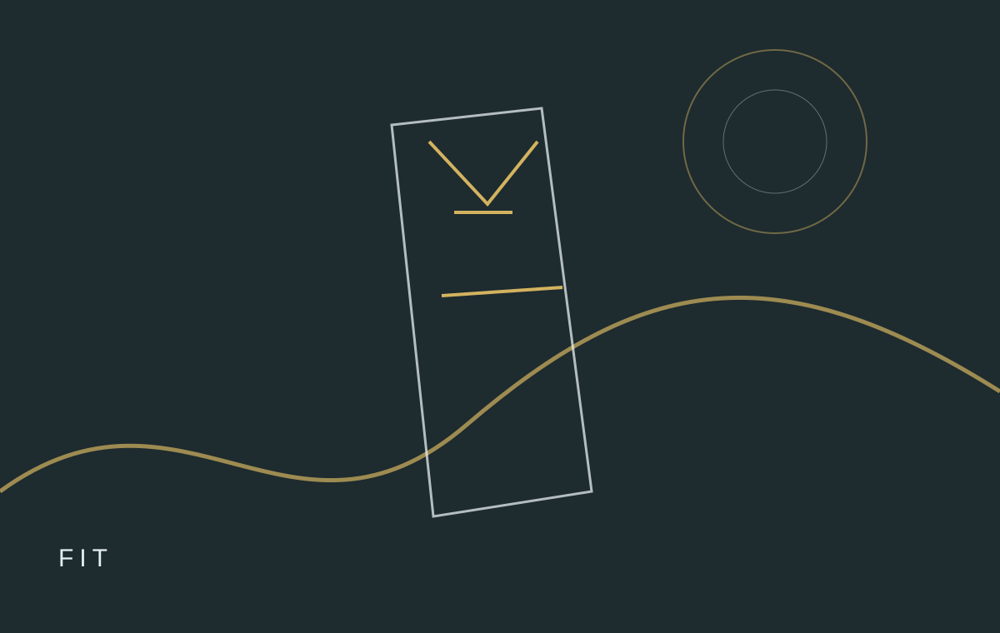

How to Check Fit Before You Decide a Garment Works

A useful wardrobe begins with observation. Before adding another piece, notice what your week actually asks from clothing: temperature changes, commuting, work settings, movement, social plans and the amount of care you can realistically give a garment. This approach turns shopping into a practical design exercise. A useful wardrobe begins with observation. Before adding another piece, notice what your week actually asks from clothing: temperature changes, commuting, work settings, movement, social plans and the amount of care you can realistically give a garment. This approach turns shopping into a practical design exercise. A useful wardrobe begins with observation. Before adding another piece, notice what your week actually asks from clothing: temperature changes, commuting, work settings, movement, social plans and the amount of care you can realistically give a garment. This approach turns shopping into a practical design exercise. A useful wardrobe begins with observation. Before adding another piece, notice what your week actually asks from clothing: temperature changes, commuting, work settings, movement, social plans and the amount of care you can realistically give a garment. This approach turns shopping into a practical design exercise. A useful wardrobe begins with observation. Before adding another piece, notice what your week actually asks from clothing: temperature changes, commuting, work settings, movement, social plans and the amount of care you can realistically give a garment. This approach turns shopping into a practical design exercise. A useful wardrobe begins with observation. Before adding another piece, notice what your week actually asks from clothing: temperature changes, commuting, work settings, movement, social plans and the amount of care you can realistically give a garment. This approach turns shopping into a practical design exercise. A useful wardrobe begins with observation. Before adding another piece, notice what your week actually asks from clothing: temperature changes, commuting, work settings, movement, social plans and the amount of care you can realistically give a garment. This approach turns shopping into a practical design exercise. A useful wardrobe begins with observation. Before adding another piece, notice what your week actually asks from clothing: temperature changes, commuting, work settings, movement, social plans and the amount of care you can realistically give a garment. This approach turns shopping into a practical design exercise.
Start with the real routine
A useful wardrobe begins with observation. Before adding another piece, notice what your week actually asks from clothing: temperature changes, commuting, work settings, movement, social plans and the amount of care you can realistically give a garment. This approach turns shopping into a practical design exercise. A useful wardrobe begins with observation. Before adding another piece, notice what your week actually asks from clothing: temperature changes, commuting, work settings, movement, social plans and the amount of care you can realistically give a garment. This approach turns shopping into a practical design exercise. A useful wardrobe begins with observation. Before adding another piece, notice what your week actually asks from clothing: temperature changes, commuting, work settings, movement, social plans and the amount of care you can realistically give a garment. This approach turns shopping into a practical design exercise. A useful wardrobe begins with observation. Before adding another piece, notice what your week actually asks from clothing: temperature changes, commuting, work settings, movement, social plans and the amount of care you can realistically give a garment. This approach turns shopping into a practical design exercise. A useful wardrobe begins with observation. Before adding another piece, notice what your week actually asks from clothing: temperature changes, commuting, work settings, movement, social plans and the amount of care you can realistically give a garment. This approach turns shopping into a practical design exercise. A useful wardrobe begins with observation. Before adding another piece, notice what your week actually asks from clothing: temperature changes, commuting, work settings, movement, social plans and the amount of care you can realistically give a garment. This approach turns shopping into a practical design exercise. A useful wardrobe begins with observation. Before adding another piece, notice what your week actually asks from clothing: temperature changes, commuting, work settings, movement, social plans and the amount of care you can realistically give a garment. This approach turns shopping into a practical design exercise. A useful wardrobe begins with observation. Before adding another piece, notice what your week actually asks from clothing: temperature changes, commuting, work settings, movement, social plans and the amount of care you can realistically give a garment. This approach turns shopping into a practical design exercise.
Compare the useful details
A useful wardrobe begins with observation. Before adding another piece, notice what your week actually asks from clothing: temperature changes, commuting, work settings, movement, social plans and the amount of care you can realistically give a garment. This approach turns shopping into a practical design exercise. A useful wardrobe begins with observation. Before adding another piece, notice what your week actually asks from clothing: temperature changes, commuting, work settings, movement, social plans and the amount of care you can realistically give a garment. This approach turns shopping into a practical design exercise. A useful wardrobe begins with observation. Before adding another piece, notice what your week actually asks from clothing: temperature changes, commuting, work settings, movement, social plans and the amount of care you can realistically give a garment. This approach turns shopping into a practical design exercise. A useful wardrobe begins with observation. Before adding another piece, notice what your week actually asks from clothing: temperature changes, commuting, work settings, movement, social plans and the amount of care you can realistically give a garment. This approach turns shopping into a practical design exercise. A useful wardrobe begins with observation. Before adding another piece, notice what your week actually asks from clothing: temperature changes, commuting, work settings, movement, social plans and the amount of care you can realistically give a garment. This approach turns shopping into a practical design exercise. A useful wardrobe begins with observation. Before adding another piece, notice what your week actually asks from clothing: temperature changes, commuting, work settings, movement, social plans and the amount of care you can realistically give a garment. This approach turns shopping into a practical design exercise. A useful wardrobe begins with observation. Before adding another piece, notice what your week actually asks from clothing: temperature changes, commuting, work settings, movement, social plans and the amount of care you can realistically give a garment. This approach turns shopping into a practical design exercise. A useful wardrobe begins with observation. Before adding another piece, notice what your week actually asks from clothing: temperature changes, commuting, work settings, movement, social plans and the amount of care you can realistically give a garment. This approach turns shopping into a practical design exercise.
Build combinations, not clutter
A useful wardrobe begins with observation. Before adding another piece, notice what your week actually asks from clothing: temperature changes, commuting, work settings, movement, social plans and the amount of care you can realistically give a garment. This approach turns shopping into a practical design exercise. A useful wardrobe begins with observation. Before adding another piece, notice what your week actually asks from clothing: temperature changes, commuting, work settings, movement, social plans and the amount of care you can realistically give a garment. This approach turns shopping into a practical design exercise. A useful wardrobe begins with observation. Before adding another piece, notice what your week actually asks from clothing: temperature changes, commuting, work settings, movement, social plans and the amount of care you can realistically give a garment. This approach turns shopping into a practical design exercise. A useful wardrobe begins with observation. Before adding another piece, notice what your week actually asks from clothing: temperature changes, commuting, work settings, movement, social plans and the amount of care you can realistically give a garment. This approach turns shopping into a practical design exercise. A useful wardrobe begins with observation. Before adding another piece, notice what your week actually asks from clothing: temperature changes, commuting, work settings, movement, social plans and the amount of care you can realistically give a garment. This approach turns shopping into a practical design exercise. A useful wardrobe begins with observation. Before adding another piece, notice what your week actually asks from clothing: temperature changes, commuting, work settings, movement, social plans and the amount of care you can realistically give a garment. This approach turns shopping into a practical design exercise. A useful wardrobe begins with observation. Before adding another piece, notice what your week actually asks from clothing: temperature changes, commuting, work settings, movement, social plans and the amount of care you can realistically give a garment. This approach turns shopping into a practical design exercise. A useful wardrobe begins with observation. Before adding another piece, notice what your week actually asks from clothing: temperature changes, commuting, work settings, movement, social plans and the amount of care you can realistically give a garment. This approach turns shopping into a practical design exercise.
Care is part of the decision
A useful wardrobe begins with observation. Before adding another piece, notice what your week actually asks from clothing: temperature changes, commuting, work settings, movement, social plans and the amount of care you can realistically give a garment. This approach turns shopping into a practical design exercise. A useful wardrobe begins with observation. Before adding another piece, notice what your week actually asks from clothing: temperature changes, commuting, work settings, movement, social plans and the amount of care you can realistically give a garment. This approach turns shopping into a practical design exercise. A useful wardrobe begins with observation. Before adding another piece, notice what your week actually asks from clothing: temperature changes, commuting, work settings, movement, social plans and the amount of care you can realistically give a garment. This approach turns shopping into a practical design exercise. A useful wardrobe begins with observation. Before adding another piece, notice what your week actually asks from clothing: temperature changes, commuting, work settings, movement, social plans and the amount of care you can realistically give a garment. This approach turns shopping into a practical design exercise. A useful wardrobe begins with observation. Before adding another piece, notice what your week actually asks from clothing: temperature changes, commuting, work settings, movement, social plans and the amount of care you can realistically give a garment. This approach turns shopping into a practical design exercise. A useful wardrobe begins with observation. Before adding another piece, notice what your week actually asks from clothing: temperature changes, commuting, work settings, movement, social plans and the amount of care you can realistically give a garment. This approach turns shopping into a practical design exercise. A useful wardrobe begins with observation. Before adding another piece, notice what your week actually asks from clothing: temperature changes, commuting, work settings, movement, social plans and the amount of care you can realistically give a garment. This approach turns shopping into a practical design exercise. A useful wardrobe begins with observation. Before adding another piece, notice what your week actually asks from clothing: temperature changes, commuting, work settings, movement, social plans and the amount of care you can realistically give a garment. This approach turns shopping into a practical design exercise.